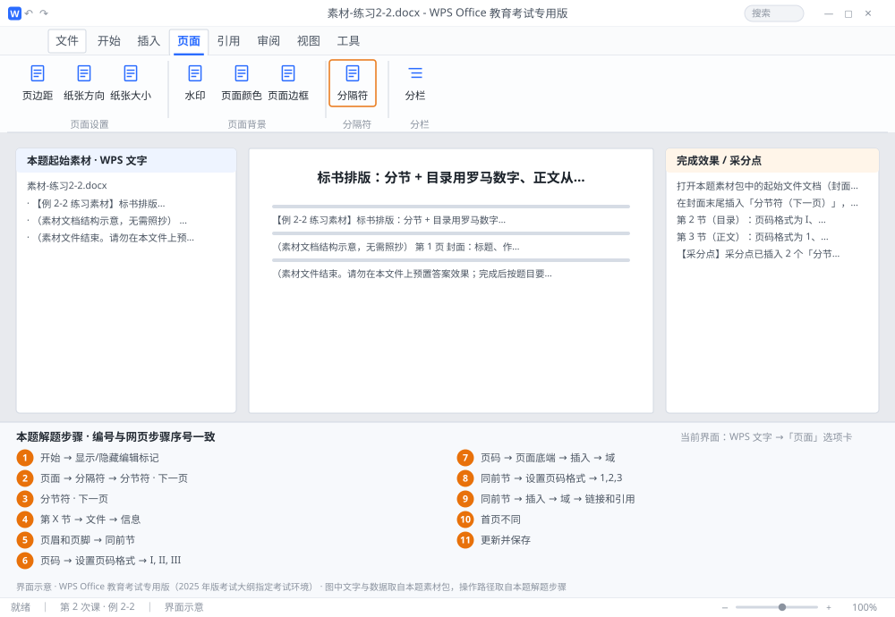

完成比对文档 · 例 2-2
标书排版：分节 + 目录用罗马数字、正文从 1 开始 + 页眉自动取章名 ｜ 第 2 次课 / WPS 文字 ｜ 网页：实操-文字2.html ｜ 考试环境：WPS Office 教育考试专用版（2025 年版考试大纲指定考试环境）
用途 本页按修订后的题目要求与解题步骤生成，是交卷自查的结果基准：
逐项列出每一步应出现的可复核结果，配合模拟操作截图与解题结果文件使用。
它不是素材包的一部分，不会预置答案动作；起始素材仍从本题素材包下载。
一、本题起始素材包
目录：练习素材/练习2-2-标书分节与页码/ ｜
下载包：练习素材/下载/练习2-2-标书分节与页码.zip
二、题目要求
- 打开本题素材包中的起始文件文档（封面 1 页、目录 1 页、正文 2 页，共 4 页）。
- 在封面末尾插入「分节符（下一页）」，在目录末尾再插入一个，形成三节。
- 第 2 节（目录）：页码格式为 I、II、III，起始页码 I，页脚居中。
- 第 3 节（正文）：页码格式为 1、2、3，起始页码 1，页脚居中。
- 第 3 节页眉：居中，用 StyleRef 域自动引用当前页所属「标题 1」的文字，并断开与前一节的链接。
- 第 1 节（封面）：不显示页码。
- 保存为 学号-姓名-练习2-2.docx。
三、解题步骤（编号与下方核对表、截图编号一致）
- 显示编辑标记。「开始」→ 点「显示/隐藏编辑标记」（¶），这样能看到分节符的位置，避免插错地方。
- 插第 1 个分节符。光标放在封面最后一段的末尾 →「页面」→「分隔符」→「分节符 · 下一页」。（分节符插在光标之后，所以光标必须在封面文字的最后，不能在段首。）
- 插第 2 个分节符。光标放到目录页最后 → 同样插入「分节符 · 下一页」。此时全文共 3 节。
- 确认节数。状态栏会显示「第 X 节」；也可「文件」→「信息」查看页数是否仍为 4 页（分节不应增加空白页）。
- 断开第 2 节的页脚链接。双击目录页页脚 → 在「页眉和页脚」选项卡中，点掉「同前节」（图标高亮表示仍链接，点一下取消）→ 本节页脚独立。
- 设目录节页码格式。仍在第 2 节页脚 →「页码」→「设置页码格式」→ 编号格式选「I, II, III」→ 起始页码输入 I → 确定。
- 插入页码。「页码」→「页面底端」→ 选居中样式；没有合适样式就用「插入」→「域」→ Page → 手动居中。
- 设正文节。双击正文页脚 → 点掉「同前节」 →「设置页码格式」→ 格式「1,2,3」→ 起始页码 1 → 确定 → 插入页码并居中。
- 设正文页眉。光标在正文页眉 → 点掉「同前节」→「插入」→「域」→ 类别「链接和引用」→ 域名 StyleRef → 样式名选「标题 1」→ 确定 → 居中。翻页可看到页眉随章名变化。
- 去掉封面页码。回到第 1 节页脚，删除页码内容（或勾选「首页不同」）。
- 更新并保存。Ctrl+A 全选 → F9 更新域 → 保存为 学号-姓名-练习2-2.docx。
四、完成效果 / 采分点
采分点已插入 2 个「分节符（下一页）」且位置正确 · 第 2 节页码为罗马数字且起始 I · 第 3 节页码为阿拉伯数字且起始 1 · 两节页脚均断开同前节 · 正文页眉为 StyleRef 域引用「标题 1」· 封面无页码
五、逐项完成核对表
| 步骤 | 关键操作路径 | 应出现的结果（可复核） |
|---|
| 1 | 显示编辑标记 | 「开始」、「显示/隐藏编辑标记」 |
| 2 | 插第 1 个分节符 | 「页面」、「分隔符」、「分节符 · 下一页」 |
| 3 | 插第 2 个分节符 | 「分节符 · 下一页」 |
| 4 | 确认节数 | 「第 X 节」、「文件」、「信息」、4 页 |
| 5 | 断开第 2 节的页脚链接 | 「页眉和页脚」、「同前节」 |
| 6 | 设目录节页码格式 | 「页码」、「设置页码格式」、「I, II, III」 |
| 7 | 插入页码 | 「页码」、「页面底端」、「插入」、「域」 |
| 8 | 设正文节 | 「同前节」、「设置页码格式」、「1,2,3」 |
| 9 | 设正文页眉 | 「同前节」、「插入」、「域」、「链接和引用」、「标题 1」 |
| 10 | 去掉封面页码 | 「首页不同」 |
| 11 | 更新并保存 | F9、学号-姓名-练习2-2.docx |
六、模拟操作截图

界面示意 · WPS Office 教育考试专用版 · 橙色编号与本题解题步骤序号一致；
图中文字与数据取自本题素材包，功能入口取自本题解题步骤。
核对方法：按网页解题步骤完成并另存自己的成稿后，逐行比对本表第 3 列的
参数、公式、区域、文件名与对象数量；再对照网页「完成效果 / 采分点」检查版式是否一致。